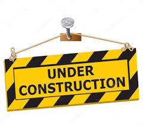

React Recipe App
Over the last two years I have gained an interest in cooking. It probably correlates to
having nothing to do during lockdown and moving out. There are only so many days in a row
one can have pasta and store bought sauce. Not to mention the fact that cooking your own food is
much cheaper than eating out.
Despite my love for cooking I constantly find myself struggling to decide what to make. I often have
a core ingredient that I want to add but I have no idea what dish to make. To try alleviate some of the barin
power required to come up with a dish and to learn some React/JavaScript along the way I decided to make a recipe app.
The app was made as a personal project for my own use. It is made in JavaScript and was Styled in CSS. I used Edamam's API to
make requests and fetch data. Here is a link to the API that I used.
 Figure 1: Main Page
Figure 1: Main Page
 Figure 2: Search Bar
Figure 2: Search Bar
 Figure 3: New Recipes
Figure 3: New Recipes
Above are some images of the App. As you can see the app is very basic and allows the user to
search for new recipes. The app then displays these in neat boxes to make the app look more presentable.
I had hoped that I would be able to get the cooking instructions for each dish but the free version of the API
did not have this. When I make more progress on the app I will consider paying for the premium.

The idea for this project came into fruition a couple of years ago when I was only new to programming.
The original project was a Python project that would take a weekly meal plan and produce a list of all the
groceries that I needed to buy for that week. I hope to combine this idea and the app to create an all in one
meal plan recipe app.
What I learned:
Making this app has taught me a lot. I gained valuable experience creating apps with React and JavaScript. I got good
first hand experience using an API to make requests and I feel more confident now to make more apps. I would like to make the
app look nicer and I will continue to work on my app making skills with a focus on user UI design.